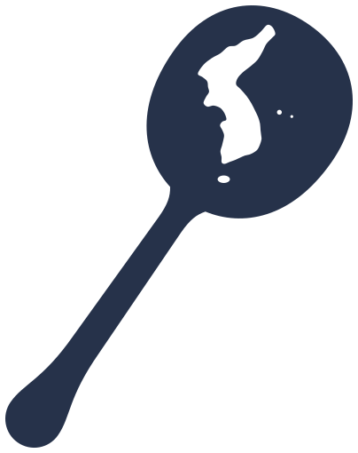
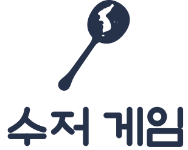
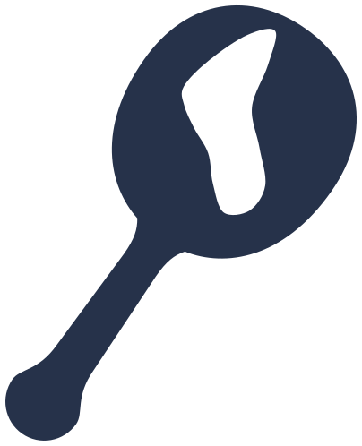

정식 심볼 (≥ 48px: 첫 화면·앱 아이콘·터치 아이콘)

머리 안 지도의 높이 = 머리 높이의 74%(기준 70% 이상). 제주·울릉도·독도를 실제 위치에, 면적은 제주 > 울릉도 > 독도(제주가 울릉도의 2배 이상)로 둡니다. 96px부터 제주가, 180px부터 세 섬이 보입니다.


단색(강제 색상·인쇄): 현재 글자색
형진 님 선택(2026-10-15). 비스듬히 선 숟가락의 머리 안에 한반도가 비어 있습니다(음각) — 태어날 때 쥐는 숟가락 안에 이 땅의 인생이 들어 있다는 뜻. 한반도 윤곽은 하나의 실루엣이며 분단선·국경선·행정 경계가 없습니다. 색은 쪽빛 한 가지(다크는 크림색, 단색판은 현재 글자색).

머리 안 지도의 높이 = 머리 높이의 74%(기준 70% 이상). 제주·울릉도·독도를 실제 위치에, 면적은 제주 > 울릉도 > 독도(제주가 울릉도의 2배 이상)로 둡니다. 96px부터 제주가, 180px부터 세 섬이 보입니다.



지도 윤곽을 14점으로 줄이고 섬을 생략했습니다(세 섬 모두 1px 미만이라 얼룩으로만 보임 — 영토 표현의 의도가 아니며 정식 심볼에는 세 섬이 있습니다). 머리를 키우고 자루를 조금 굵게 해 28px에서도 금 간 숟가락·번개·열쇠로 읽히지 않습니다.
헤더 로고 40px — 워드마크 글자 높이 약 23px(기준 ≥ 22px)
(참고) 28px에서도 읽히지만 헤더 최소 높이는 40px입니다